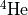

Input Files¶
Sedona requires the user to supply two files that describe the properties of the desired run.
- The Parameter File is a text file (in the lua scripting language) that let’s you set the desired runtime parameters of the job. By default, this file is assumed to be named param.lua
- The Model File specifies the grid geometry and the initial conditions (e.g., density, velocity, temperature) to be used in your calculation.
In addition, the user must point to two additional files
- The defaults file is a text file that specifies the default values of all runtime parameters. Any parameter not specifed in the The Parameter File will assume the default value given in this file. A standard defaults file is included in the Sedona distribution at defaults/sedona_defaults.lua. You can modify this file, or create different default files for different projects.
- The Atomic Data File provides the detailed properties (e.g., level energies, line transitions) of the atoms used for calculating opacities and emissivities. Existing atomic data files are provided in the data/ directory of the Sedona release.
The names of the model file, the defaults file and the atomic data file are must be specified within the parameter file used for the run. The name of the parameter file itself is specified as a command line argument when running the code:
./sedona6.ex my_parameter_file.lua
If no argument is given after ./sedona6.ex the code will assume the file is named param.lua and is in the current directory.
Input parameter and model files for several example setups for different sorts of science runs are provided in the examples/ directory of the [sedona] distribution.
The Parameter File¶
All runtime parameters are set in the parameter file (assumed to be named param.lua unless another name is supplied on the command line argument). A complete list of [sedona] runtime parameters is compiled in the appendix. The pracitical usage of individual parameters described in the relevant sections throughout this documentation.
The parameter files uses the Lua scripting language. Each parameter is set on a different line. Scalar parameters are set as, e.g.,:
tstep_time_start = 100.0
String parameters (such as filenames) are set using quotes, e.g.,:
model_file = "my_model.hdf5"
Vectors parameters are set using { } brackets, e.g.,:
transport_nu_grid = {1e14,1e15,1e13}
Comments can be made in the lua parameter files by putting a double dash before a line, e.g.,
-- set uniform frequency grid with bounds (nu_start, nu_stop, nu_delta)
transport_nu_grid = {1e14,1e15,1e13}
The lua scripting allows you to define helper variables and use math expressions within the parameter file itself. For example, we can define a variable called “days” and use it to more conveniently set runtime parameters
days = 86400 -- helper variable, seconds in a day
-- set start and stop time of calculation
tstep_time_start = 2*days
tstep_time_stop = 100*days
You can also access environment variables within the parameter file using the os.getenv() command. For example, to set a local variable sedona_path to the environment variable SEDONA_HOME, use:
sedona_path = os.getenv('SEDONA_HOME')
String concantention is done using double periods. For example, you can use the sedona_path variable defined above to specify the full path of a file
atomic_data_file = sedona_path.."/data/atomic_data.hdf5"
The parameter file must set the name of a default file, which is a file that uses the same lua scripting to define the default values of all runtime parameters. A standard defaults file is included in the [sedona] distribution and can be pointed in the parameter file by:
defaults_file = sedona_path.."/defaults/sedona_defaults.lua"
You can create multiple defaults files and use them for different projects, and point to which one they wish to use in the parameter file of any given run.
While the lua scripting language is fairly convenient, the sedonalib python package also provides a python class that lets the user easily generate parameter files within a python script or jupyter notebook. See.. for usage.
The Model File¶
The model file defines the grid geometry, resolution and initial conditions to be used in the calculation. The grid geometries currently implemented in [sedona] are [1]
| Geometry name | Description |
|---|---|
| grid_1D_sphere | 1D spherical coordinates (r) |
| grid_2D_cyln | 2D cylndrical coordinates (r-z) |
| grid_3D_cart | 3D cartesian coordinates (x,y,z) |
| grid_3D_sphere | 3D spherical coordinates () |
In addition to the geometry, the model file also specifies the following properties
- The number of zones each dimension
- The spatial size of zones in each dimension
- The list of atomic species to be used in the calculation (defined by their atomic number Z and atomic weight A)
- The time (in seconds) at which the model is defined (most relevant for homologously expanding models)
The model file also includes arrays that specify, for each zone, the values of the:
- density
- temperature
- velocity
- mass fraction of each atomic species being used
- radiation energy density (optional)
where all quantities are in cgs units.
The structure of the model file differs slightly depending on the geometry being used; the format for each case is described in the sections below. For 1-dimensional calculations, the model file can either be in ascii or in hdf5. For 2D and 3D calculations, the model file must be in hdf5 format.
1D spherical model (ascii format)¶
1D spherical models the zones are cocentric shells. The
In the ascii format, the 1D_sphere model files begin with the following 3 line header:
**geometry** **type**
**n_zones** **r0_in time n_species**
**:math:`Z.A_1` Z_2.A_2 Z_3.A_3 ...**
where in the first line,
- geometry = grid geometry, one of the names in Table~.
- type = a subtype of the geometry
where n_zones is the number of radial zones (i.e., shells), r0_in is the inner radius of the innermost shell, time is the time at which the model is defined, and n_species is the number of atomic species to be used.
For example, this header
1D_SPHERE standard
100 0.0 86400 4
1.1. 2.4 6.12 8.16
states that the model has 100 radial zones, the inner radius of the innermost zone is , and the time of the model is 86400 seconds (i.e., one day). There are 4 atomic species used in the model, which are specifie
d on the third line in the
Z.A format to be: 1.1 = hydrogen-1 ( ), 2.4 = helium-4 (), 6.12 (carbon-12, ) and 8.16 (oxygen-16,  )
)
After the header follows a set of columns with n_zones rows that specify the properties of each zone
r_out v_out density temperature X_1 X_2 X_3 …*
where r_out is the outer radius of a zone (i.e., shell), v_out is the velocity at the outer radius of the zone,
1D spherical model (hdf5 format)¶
Has the following hdf5 datasets
| dataset | dimensions | description |
|---|---|---|
| r_out | double[n_zones] | outer radius of a zone (i.e., shell) |
| rho | double[n_zones] | density of the gas in each zone |
| temp | double[n_zones] | temperature of the gas in each zone |
2D cylndrical¶
- term (up to a line of text)
Definition of the term, which must be indented
and can even consist of multiple paragraphs
- next term
- Description.
Atomic Data File¶
Atomic datafiles hold detailed information about atoms, and can be found in the data/ folder.
Essential atomic data is compiled into a single hdf5 file. Additional atomic line data (e.g., Kurucz line lists) can optionally be accessed using “fuzzline’’ files
| parameter | values | definition |
|---|---|---|
| data_atomic_file | <string> | name of the atomic data file |
| data_fuzzline_file | <string> | name of fuzzline file to include extra “fuzz” lines |
Footnotes
| [1] | Additional geometries can be defined by modifying the [sedona] source code. The grid structure is abstracted into a separate class that handles all geometrical information. Defining a new geometry thus requires writing a new derived C++ class that provides the requisite geometrical routines. |